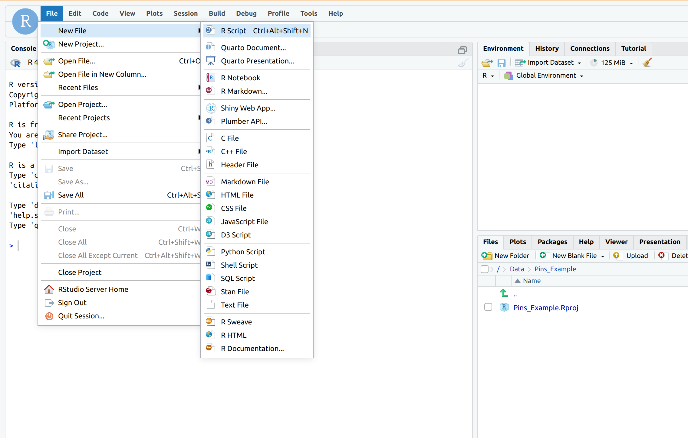
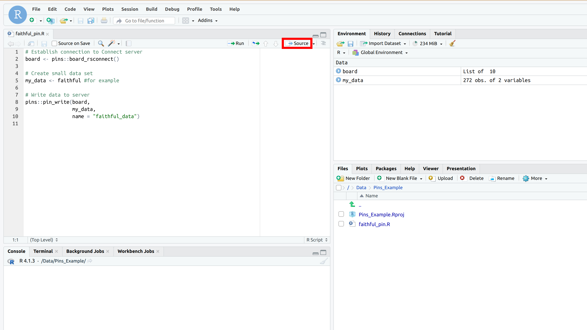
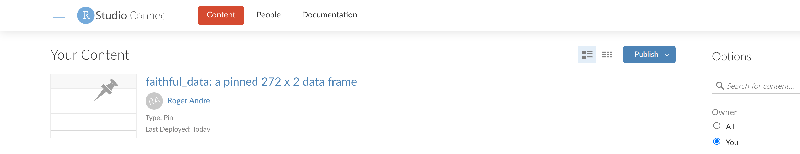
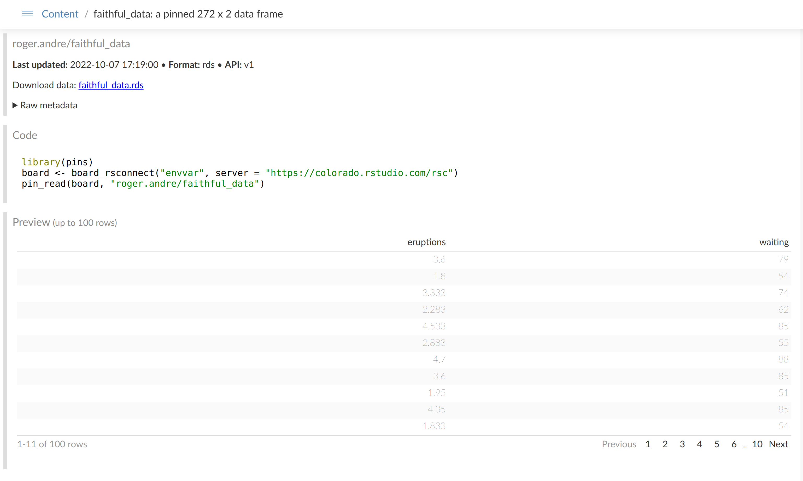

Pins
The easiest way to publish a Pins board is to use the RStudio IDE to create an R file that contains the information needed to transmit data and “pin” it to the Connect server.
Note: The information below is taken from here and adapted for the purpose of this guide.
Prerequisites
pinsR package installedrsconnectR package installed
Verify Connect server is registered
Connect servers which have been registered can be viewed by using the following command in an R console.
rsconnect::servers(local = TRUE)This will return a list of available servers.
name url certificate
[1,] "colorado.rstudio.com" "https://colorado.rstudio.com/rsc/__api__" "" The name value will be referenced later as
If no Servers are listed, follow the instructions in Connecting Your Account to register your Connect server to your IDE.
Create Content
1. Create a new R script named faithful_pin.R

2. Drop the following code into the file
faithful_pin.R
# Establish connection to Connect server
board <- pins::board_rsconnect(server = "<NAME>")
# Create small data set
my_data <- faithful #for example
# Write data to server
pins::pin_write(board,
my_data,
name = "faithful_data")Replace the
Publish Content
1. Run the script
Click on Source in the IDE

Source will execute the contents of the current file and you should see the following in the Console window”
Connecting to RSC 2022.09.0 at <https://colorado.rstudio.com/rsc>
Guessing `type = 'rds'`
Writing to pin 'roger.andre/faithful_data'2. Verify content on Connect server
You should see the newly published pin set in your Content listing.

Click on the content and you should see information about the data listed.
